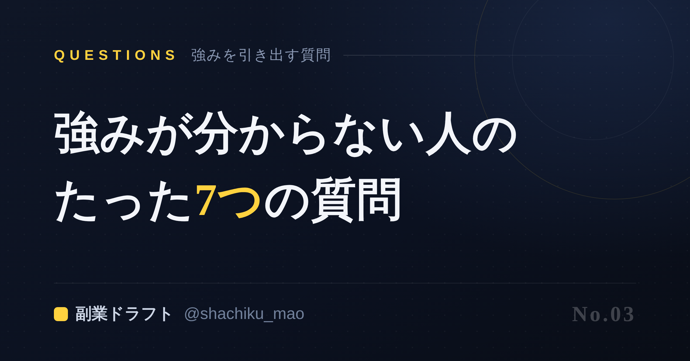
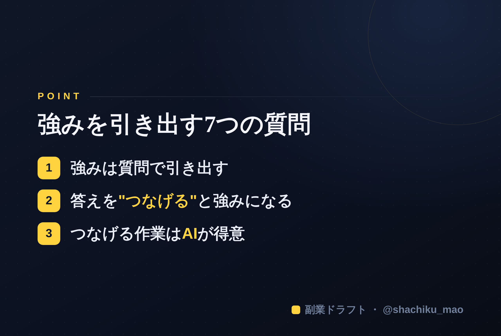

1. 「タイトルをコピー」→ note のタイトル欄に貼る
2. オレンジのラベルの画像（見出し画像）を note の見出し画像に設定
3. 「本文1をコピー」→ note本文に貼る
4. 青いラベルの位置（本文の途中）に、同じ名前の画像をアップして挿入
5. 「本文2をコピー」→ 続きを貼る
※ 見出しが普通の文字になったら、その行を選んで「大見出し」に設定してください

「強みを活かして副業しよう」とよく言われます。でも、そもそもその"強み"が分からない——ここでつまずく人が本当に多い。
結論から言うと、強みは"探す"ものではなく、"質問で引き出す"ものです。今日はそのための7つの質問を紹介します。紙とペン（またはスマホのメモ）を用意して、一つずつ答えてみてください。
強みを引き出す7つの質問
Q1. 最近、人から感謝されたことは？ 「ありがとう」「助かった」の裏に、あなたが自然に提供できている価値があります。
Q2. よく相談される・頼られることは？ 人は無意識に、得意な人を見抜いて相談します。相談内容＝あなたの強みの入口。
Q3. 時間を忘れて没頭できることは？ 苦にならない＝続けられる。発信テーマは"好き"の中にあります。
Q4. これまでに乗り越えた苦労・失敗は？ 克服の物語は、同じ悩みを持つ人の共感と信頼を生みます。
Q5. 前職や今の仕事で"当たり前"にやっていることは？ 業界の常識は、業界外の人にとっての専門知識です。
Q6. お金や時間をかけてきたことは？ 投資してきた分野には、あなたの本気と蓄積があります。
Q7. どんな人の役に立てたら嬉しい？ 過去の自分、身近な誰か——ターゲットが決まると発信の軸が定まります。
答えを"つなげる"と強みになる
7つの答えが出たら、共通点や重なりを探してみてください。
たとえば「元経理」×「数字が苦手な人によく相談される」×「家計管理が趣味」なら、"数字アレルギーの人にお金の管理をやさしく伝える人"という強みが立ち上がります。バラバラの点を線でつなぐと、あなただけのポジションが見えてくるのです。
ひとりでは"つなげる"のが難しい
ただ、この「答えを引き出して、つなげて、言葉にする」作業は、ひとりだと意外と難しい。自分のことは客観視しづらいからです。
だから、質問してくれる相手がいると一気に進みます。問われて、答えて、整理してもらう。それだけで「自分にはこれがある」と腹落ちします。

この7つの質問を、AIが対話形式で深掘りし、出てきた強みからSNS・noteの下書きまで作ってくれるのが 「副業ドラフト」 です。無料で試せます。
👉 https://note-threadssf.onrender.com
強みは、質問の先に待っています。